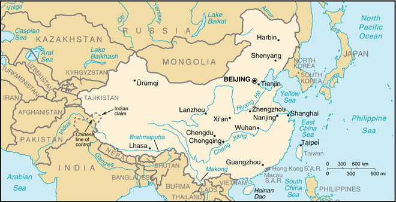

(also see separate Hong Kong, Macau, and Taiwan entries)

|
China (also see separate Hong Kong, Macau, and Taiwan entries) |
|
| Introduction Geography People Government Economy Communications Transportation Military Transnational Issues | ||
|  | ||
| China | Introduction | Top of Page |
| Background: | For centuries China has stood as a leading civilization, outpacing the rest of the world in the arts and sciences. But in the first half of the 20th century, China was beset by major famines, civil unrest, military defeats, and foreign occupation. After World War II, the Communists under MAO Zedong established a dictatorship that, while ensuring China's sovereignty, imposed strict controls over everyday life and cost the lives of tens of millions of people. After 1978, his successor DENG Xiaoping gradually introduced market-oriented reforms and decentralized economic decision making. Output quadrupled in the next 20 years and China now has the world's second largest GDP. Political controls remain tight even while economic controls continue to weaken. |
| China | Geography | Top of Page |
| Location: | Eastern Asia, bordering the East China Sea, Korea Bay, Yellow Sea, and South China Sea, between North Korea and Vietnam |
| Geographic coordinates: | 35 00 N, 105 00 E |
| Map references: | Asia |
| Area: |
total:
9,596,960 sq km
land: 9,326,410 sq km water: 270,550 sq km |
| Area - comparative: | slightly smaller than the US |
| Land boundaries: |
total:
22,147.24 km
border countries: Afghanistan 76 km, Bhutan 470 km, Burma 2,185 km, Hong Kong 30 km, India 3,380 km, Kazakhstan 1,533 km, North Korea 1,416 km, Kyrgyzstan 858 km, Laos 423 km, Macau 0.34 km, Mongolia 4,676.9 km, Nepal 1,236 km, Pakistan 523 km, Russia (northeast) 3,605 km, Russia (northwest) 40 km, Tajikistan 414 km, Vietnam 1,281 km |
| Coastline: | 14,500 km |
| Maritime claims: |
contiguous zone:
24 NM
continental shelf: 200 NM or to the edge of the continental margin territorial sea: 12 NM |
| Climate: | extremely diverse; tropical in south to subarctic in north |
| Terrain: | mostly mountains, high plateaus, deserts in west; plains, deltas, and hills in east |
| Elevation extremes: |
lowest point:
Turpan Pendi -154 m
highest point: Mount Everest 8,850 m (1999 est.) |
| Natural resources: | coal, iron ore, petroleum, natural gas, mercury, tin, tungsten, antimony, manganese, molybdenum, vanadium, magnetite, aluminum, lead, zinc, uranium, hydropower potential (world's largest) |
| Land use: |
arable land:
10%
permanent crops: 0% permanent pastures: 43% forests and woodland: 14% other: 33% (1993 est.) |
| Irrigated land: | 498,720 sq km (1993 est.) |
| Natural hazards: | frequent typhoons (about five per year along southern and eastern coasts); damaging floods; tsunamis; earthquakes; droughts |
| Environment - current issues: | air pollution (greenhouse gases, sulfur dioxide particulates) from reliance on coal, produces acid rain; water shortages, particularly in the north; water pollution from untreated wastes; deforestation; estimated loss of one-fifth of agricultural land since 1949 to soil erosion and economic development; desertification; trade in endangered species |
| Environment - international agreements: |
party to:
Antarctic-Environmental Protocol, Antarctic Treaty, Biodiversity, Climate Change, Desertification, Endangered Species, Hazardous Wastes, Law of the Sea, Marine Dumping, Nuclear Test Ban, Ozone Layer Protection, Ship Pollution, Tropical Timber 83, Tropical Timber 94, Wetlands, Whaling
signed, but not ratified: Climate Change-Kyoto Protocol, Marine Life Conservation |
| Geography - note: | world's fourth-largest country (after Russia, Canada, and US) |
| China | People | Top of Page |
| Population: | 1,273,111,290 (July 2001 est.) |
| Age structure: |
0-14 years:
25.01% (male 166,754,893; female 151,598,117)
15-64 years: 67.88% (male 445,222,858; female 418,959,646) 65 years and over: 7.11% (male 42,547,296; female 48,028,480) (2001 est.) |
| Population growth rate: | 0.88% (2001 est.) |
| Birth rate: | 15.95 births/1,000 population (2001 est.) |
| Death rate: | 6.74 deaths/1,000 population (2001 est.) |
| Net migration rate: | -0.39 migrant(s)/1,000 population (2001 est.) |
| Sex ratio: |
at birth:
1.09 male(s)/female
under 15 years: 1.1 male(s)/female 15-64 years: 1.06 male(s)/female 65 years and over: 0.89 male(s)/female total population: 1.06 male(s)/female (2001 est.) |
| Infant mortality rate: | 28.08 deaths/1,000 live births (2001 est.) |
| Life expectancy at birth: |
total population:
71.62 years
male: 69.81 years female: 73.59 years (2001 est.) |
| Total fertility rate: | 1.82 children born/woman (2001 est.) |
| HIV/AIDS - adult prevalence rate: | 0.07% (1999 est.) |
| HIV/AIDS - people living with HIV/AIDS: | 500,000 (1999 est.) |
| HIV/AIDS - deaths: | 17,000 (1999 est.) |
| Nationality: |
noun:
Chinese (singular and plural)
adjective: Chinese |
| Ethnic groups: | Han Chinese 91.9%, Zhuang, Uygur, Hui, Yi, Tibetan, Miao, Manchu, Mongol, Buyi, Korean, and other nationalities 8.1% |
| Religions: |
Daoist (Taoist), Buddhist, Muslim 2%-3%, Christian 1% (est.)
note: officially atheist |
| Languages: | Standard Chinese or Mandarin (Putonghua, based on the Beijing dialect), Yue (Cantonese), Wu (Shanghaiese), Minbei (Fuzhou), Minnan (Hokkien-Taiwanese), Xiang, Gan, Hakka dialects, minority languages (see Ethnic groups entry) |
| Literacy: |
definition:
age 15 and over can read and write
total population: 81.5% male: 89.9% female: 72.7% (1995 est.) |
| China | Government | Top of Page |
| Country name: |
conventional long form:
People's Republic of China
conventional short form: China local long form: Zhonghua Renmin Gongheguo local short form: Zhong Guo abbreviation: PRC |
| Government type: | Communist state |
| Capital: | Beijing |
| Administrative divisions: | 23 provinces (sheng, singular and plural), 5 autonomous regions* (zizhiqu, singular and plural), and 4 municipalities** (shi, singular and plural); Anhui, Beijing**, Chongqing**, Fujian, Gansu, Guangdong, Guangxi*, Guizhou, Hainan, Hebei, Heilongjiang, Henan, Hubei, Hunan, Jiangsu, Jiangxi, Jilin, Liaoning, Nei Mongol*, Ningxia*, Qinghai, Shaanxi, Shandong, Shanghai**, Shanxi, Sichuan, Tianjin**, Xinjiang*, Xizang* (Tibet), Yunnan, Zhejiang; note - China considers Taiwan its 23rd province; see separate entries for the special administrative regions of Hong Kong and Macau |
| Independence: | 221 BC (unification under the Qin or Ch'in Dynasty 221 BC; Qing or Ch'ing Dynasty replaced by the Republic on 12 February 1912; People's Republic established 1 October 1949) |
| National holiday: | Founding of the People's Republic of China, 1 October (1949) |
| Constitution: | most recent promulgation 4 December 1982 |
| Legal system: | a complex amalgam of custom and statute, largely criminal law; rudimentary civil code in effect since 1 January 1987; new legal codes in effect since 1 January 1980; continuing efforts are being made to improve civil, administrative, criminal, and commercial law |
| Suffrage: | 18 years of age; universal |
| Executive branch: |
chief of state:
President JIANG Zemin (since 27 March 1993) and Vice President HU Jintao (since 16 March 1998)
head of government: Premier ZHU Rongji (since 18 March 1998); Vice Premiers QIAN Qichen (since 29 March 1993), LI Lanqing (29 March 1993), WU Bangguo (since 17 March 1995), and WEN Jiabao (since 18 March 1998) cabinet: State Council appointed by the National People's Congress (NPC) elections: president and vice president elected by the National People's Congress for five-year terms; elections last held 16-18 March 1998 (next to be held NA March 2003); premier nominated by the president, confirmed by the National People's Congress election results: JIANG Zemin reelected president by the Ninth National People's Congress with a total of 2,882 votes (36 delegates voted against him, 29 abstained, and 32 did not vote); HU Jintao elected vice president by the Ninth National People's Congress with a total of 2,841 votes (67 delegates voted against him, 39 abstained, and 32 did not vote) |
| Legislative branch: |
unicameral National People's Congress or Quanguo Renmin Daibiao Dahui (2,979 seats; members elected by municipal, regional, and provincial people's congresses to serve five-year terms)
elections: last held NA December 1997-NA February 1998 (next to be held late 2002-NA March 2003) election results: percent of vote - NA%; seats - NA |
| Judicial branch: | Supreme People's Court (judges appointed by the National People's Congress); Local Peoples Courts (comprise higher, intermediate and local courts); Special Peoples Courts (primarily military, maritime, and railway transport courts) |
| Political parties and leaders: | Chinese Communist Party or CCP [JIANG Zemin, General Secretary of the Central Committee]; eight registered small parties controlled by CCP |
| Political pressure groups and leaders: | no substantial political opposition groups exist, although the government has identified the Falungong sect and the China Democracy Party as potential rivals |
| International organization participation: | AfDB, APEC, ARF (dialogue partner), AsDB, ASEAN (dialogue partner), BIS, CCC, CDB (non-regional), ESCAP, FAO, G-77, IAEA, IBRD, ICAO, ICC, ICFTU, ICRM, IDA, IFAD, IFC, IFRCS, IHO, ILO, IMF, IMO, Inmarsat, Intelsat, Interpol, IOC, ISO, ITU, LAIA (observer), MINURSO, NAM (observer), OPCW, PCA, UN, UN Security Council, UNAMSIL, UNCTAD, UNESCO, UNHCR, UNIDO, UNIKOM, UNITAR, UNMEE, UNTAET, UNTSO, UNU, UPU, WHO, WIPO, WMO, WToO, WTrO (observer), ZC |
| Diplomatic representation in the US: |
chief of mission:
Ambassador-designate YANG Jiechi
chancery: 2300 Connecticut Avenue NW, Washington, DC 20008 telephone: [1] (202) 328-2500 consulate(s) general: Chicago, Houston, Los Angeles, New York, and San Francisco |
| Diplomatic representation from the US: |
chief of mission:
Ambassador Joseph W. PRUEHER
embassy: Xiu Shui Bei Jie 3, 100600 Beijing mailing address: PSC 461, Box 50, FPO AP 96521-0002 telephone: [86] (10) 6532-3431 FAX: [86] (10) 6532-6422 consulate(s) general: Chengdu, Guangzhou, Shanghai, Shenyang |
| Flag description: | red with a large yellow five-pointed star and four smaller yellow five-pointed stars (arranged in a vertical arc toward the middle of the flag) in the upper hoist-side corner |
| China | Economy | Top of Page |
| Economy - overview: | In late 1978 the Chinese leadership began moving the economy from a sluggish Soviet-style centrally planned economy to a more market-oriented system. Whereas the system operates within a political framework of strict Communist control, the economic influence of non-state managers and enterprises has been steadily increasing. The authorities have switched to a system of household responsibility in agriculture in place of the old collectivization, increased the authority of local officials and plant managers in industry, permitted a wide variety of small-scale enterprise in services and light manufacturing, and opened the economy to increased foreign trade and investment. The result has been a quadrupling of GDP since 1978. In 2000, with its 1.26 billion people but a GDP of just $3,600 per capita, China stood as the second largest economy in the world after the US (measured on a purchasing power parity basis). Agricultural output doubled in the 1980s, and industry also posted major gains, especially in coastal areas near Hong Kong and opposite Taiwan, where foreign investment helped spur output of both domestic and export goods. On the darker side, the leadership has often experienced in its hybrid system the worst results of socialism (bureaucracy and lassitude) and of capitalism (windfall gains and stepped-up inflation). Beijing thus has periodically backtracked, retightening central controls at intervals. The government has struggled to (a) collect revenues due from provinces, businesses, and individuals; (b) reduce corruption and other economic crimes; and (c) keep afloat the large state-owned enterprises many of which had been shielded from competition by subsides and had been losing the ability to pay full wages and pensions. From 80 to 120 million surplus rural workers are adrift between the villages and the cities, many subsisting through part-time low-paying jobs. Popular resistance, changes in central policy, and loss of authority by rural cadres have weakened China's population control program, which is essential to maintaining growth in living standards. Another long-term threat to continued rapid economic growth is the deterioration in the environment, notably air pollution, soil erosion, and the steady fall of the water table especially in the north. China continues to lose arable land because of erosion and economic development. Weakness in the global economy in 2001 could hamper growth in exports. Beijing will intensify efforts to stimulate growth through spending on infrastructure--such as water control and power grids--and poverty relief and through rural tax reform aimed at eliminating arbitrary local levies on farmers. |
| GDP: | purchasing power parity - $4.5 trillion (2000 est.) |
| GDP - real growth rate: | 8% (2000 est.) |
| GDP - per capita: | purchasing power parity - $3,600 (2000 est.) |
| GDP - composition by sector: |
agriculture:
15%
industry: 50% services: 35% (2000 est.) |
| Population below poverty line: | 10% (1999 est.) |
| Household income or consumption by percentage share: |
lowest 10%:
2.4%
highest 10%: 30.4% (1998) |
| Inflation rate (consumer prices): | 0.4% (2000 est.) |
| Labor force: | 700 million (1998 est.) |
| Labor force - by occupation: | agriculture 50%, industry 24%, services 26% (1998) |
| Unemployment rate: | urban unemployment roughly 10%; substantial unemployment and underemployment in rural areas (2000 est.) |
| Budget: |
revenues:
$NA
expenditures: $NA, including capital expenditures of $NA |
| Industries: | iron and steel, coal, machine building, armaments, textiles and apparel, petroleum, cement, chemical fertilizers, footwear, toys, food processing, automobiles, consumer electronics, telecommunications |
| Industrial production growth rate: | 10% (2000 est.) |
| Electricity - production: | 1.173 trillion kWh (1999) |
| Electricity - production by source: |
fossil fuel:
79.82%
hydro: 18.98% nuclear: 1.2% other: 0.01% (1999) |
| Electricity - consumption: | 1.084 trillion kWh (1999) |
| Electricity - exports: | 7.2 billion kWh (1999) |
| Electricity - imports: | 90 million kWh (1999) |
| Agriculture - products: | rice, wheat, potatoes, sorghum, peanuts, tea, millet, barley, cotton, oilseed; pork; fish |
| Exports: | $232 billion (f.o.b., 2000) |
| Exports - commodities: | machinery and equipment; textiles and clothing, footwear, toys and sporting goods; mineral fuels |
| Exports - partners: | US 21%, Hong Kong 18%, Japan 17%, South Korea, Germany, Netherlands, UK, Singapore, Taiwan (2000) |
| Imports: | $197 billion (f.o.b., 2000) |
| Imports - commodities: | machinery and equipment, mineral fuels, plastics, iron and steel, chemicals |
| Imports - partners: | Japan 18%, Taiwan 11%, US 10%, South Korea 10%, Germany, Hong Kong, Russia, Malaysia (2000) |
| Debt - external: | $162 billion (2000 est.) |
| Economic aid - recipient: | $NA |
| Currency: | yuan (CNY) |
| Currency code: | CNY |
| Exchange rates: |
yuan per US dollar - 8.2776 (January 2001), 8.2785 (2000), 8.2783 (1999), 8.2790 (1998), 8.2898 (1997), 8.3142 (1996)
note: beginning 1 January 1994, the People's Bank of China quotes the midpoint rate against the US dollar based on the previous day's prevailing rate in the interbank foreign exchange market |
| Fiscal year: | calendar year |
| China | Communications | Top of Page |
| Telephones - main lines in use: | 135 million (2000) |
| Telephones - mobile cellular: | 65 million (January 2001) |
| Telephone system: |
general assessment:
domestic and international services are increasingly available for private use; unevenly distributed domestic system serves principal cities, industrial centers, and many towns
domestic: interprovincial fiber-optic trunk lines and cellular telephone systems have been installed; a domestic satellite system with 55 earth stations is in place international: satellite earth stations - 5 Intelsat (4 Pacific Ocean and 1 Indian Ocean), 1 Intersputnik (Indian Ocean region) and 1 Inmarsat (Pacific and Indian Ocean regions); several international fiber-optic links to Japan, South Korea, Hong Kong, Russia, and Germany (2000) |
| Radio broadcast stations: | AM 369, FM 259, shortwave 45 (1998) |
| Radios: | 417 million (1997) |
| Television broadcast stations: | 3,240 (of which 209 are operated by China Central Television, 31 are provincial TV stations and nearly 3,000 are local city stations) (1997) |
| Televisions: | 400 million (1997) |
| Internet country code: | .cn |
| Internet Service Providers (ISPs): | 3 (2000) |
| Internet users: | 22 million (January 2001) |
| China | Transportation | Top of Page |
| Railways: |
total:
67,524 km (including 5,400 km of provincial "local" rails)
standard gauge: 63,924 km 1.435-m gauge (13,362 km electrified; 20,250 km double track) narrow gauge: 3,600 km 0.750-m and 1.000-m gauge local industrial lines (1998 est.) note: a new total of 68,000 km was estimated for early 1999 to take new construction programs into account (1999) |
| Highways: |
total:
1.4 million km
paved: 271,300 km (with at least 16,000 km of expressways) unpaved: 1,128,700 km (1999) |
| Waterways: | 110,000 km (1999) |
| Pipelines: | crude oil 9,070 km; petroleum products 560 km; natural gas 9,383 km (1998) |
| Ports and harbors: | Dalian, Fuzhou, Guangzhou, Haikou, Huangpu, Lianyungang, Nanjing, Nantong, Ningbo, Qingdao, Qinhuangdao, Shanghai, Shantou, Tianjin, Xiamen, Xingang, Yantai, Zhanjiang |
| Merchant marine: |
total:
1,745 ships (1,000 GRT or over) totaling 16,533,521 GRT/24,746,859 DWT
ships by type: barge carrier 2, bulk 324, cargo 825, chemical tanker 21, combination bulk 11, combination ore/oil 1, container 132, liquefied gas 24, multi-functional large-load carrier 5, passenger 7, passenger/cargo 45, petroleum tanker 258, refrigerated cargo 22, roll on/roll off 23, short-sea passenger 41, specialized tanker 3, vehicle carrier 1 (2000 est.) |
| Airports: | 489 (2000 est.) |
| Airports - with paved runways: |
total:
324
over 3,047 m: 27 2,438 to 3,047 m: 88 1,524 to 2,437 m: 147 914 to 1,523 m: 30 under 914 m: 32 (2000 est.) |
| Airports - with unpaved runways: |
total:
165
over 3,047 m: 1 2,438 to 3,047 m: 1 1,524 to 2,437 m: 29 914 to 1,523 m: 56 under 914 m: 78 (2000 est.) |
| China | Military | Top of Page |
| Military branches: | People's Liberation Army (PLA) - which includes Ground Forces, Navy (includes Marines and Naval Aviation), Air Force, Second Artillery Corps (the strategic missile force), People's Armed Police (internal security troops, nominally subordinate to Ministry of Public Security, but included by the Chinese as part of the "armed forces" and considered to be an adjunct to the PLA in wartime) |
| Military manpower - military age: | 18 years of age |
| Military manpower - availability: | males age 15-49: 366,306,353 (2001 est.) |
| Military manpower - fit for military service: | males age 15-49: 200,886,946 (2001 est.) |
| Military manpower - reaching military age annually: | males: 10,089,458 (2001 est.) |
| Military expenditures - dollar figure: | $12.608 billion (FY99); note - China's real defense spending may be several times higher than the official figure because a number of significant items are funded elsewhere |
| Military expenditures - percent of GDP: | 1.2% (FY99) |
| China | Transnational Issues | Top of Page |
| Disputes - international: | most of boundary with India in dispute; dispute over at least two small sections of the boundary with Russia remains to be settled, despite 1997 boundary agreement; portions of the boundary with Tajikistan are indefinite; 33-km section of boundary with North Korea in the Paektu-san (mountain) area is indefinite; involved in a complex dispute over the Spratly Islands with Malaysia, Philippines, Taiwan, Vietnam, and possibly Brunei; maritime boundary agreement with Vietnam in the Gulf of Tonkin awaits ratification; Paracel Islands occupied by China, but claimed by Vietnam and Taiwan; claims Japanese-administered Senkaku-shoto (Senkaku Islands/Diaoyu Tai), as does Taiwan |
| Illicit drugs: | major transshipment point for heroin produced in the Golden Triangle; growing domestic drug abuse problem; source country for chemical precursors and methamphetamine |
{kind=link}